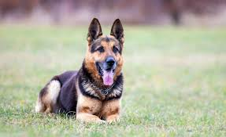
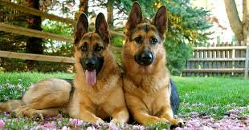

If you’re a German Shepherd owner, you have a strong suspicion
your dog might actually be smarter than you are. After all, what can’t your dog do? These dogs are known for
their intelligence and many can learn a new behavior in only a few repetitions. In addition, they have a
legendary desire to cooperate and work with us, a trait many see as a wish to please their humans. No wonder
this breed excels at so many activities and is a top Obedience competitor. Because German Shepherds are one of
the brightest breeds, be sure to be consistent, use positive reinforcement-based methods, provide plenty of
mentally stimulating toys, and play brain-challenging games.
WHY YOU SHOULD KEEP A SHEPERD AT HOME

German Shepherd Dogs are known for their versatility:
If you need any job done, just ask your dog. GSD owners
understand their dogs were developed as working dogs. In fact, the ideal German Shepherd has a body and gait
suited to the hard work that is considered its primary purpose. This means your dog can excel at almost
anything. From dog sports like rally, agility, scent work, therapy work, to service dog work, German Shepherds
can do it all. The only thing holding your dog back is the time and energy you can commit to training. It’s no
wonder people always think your dog is a service or police dog.
THE SUPER ACTIVE DOG

GSDs are super active:
Therefore, so are you. Thinking of lounging on the couch? No way!
German Shepherd owners know that won’t happen until you’ve walked your dog, gone to the park, or provided some
sort of exercise. This breed only thrives with enough regular exercise to burn off all that excess energy. If
you don’t give your GSD daily workouts, watch out. Your dog will get that energy out somehow, and most likely in
ways you don’t want. To be sure your German Shepherd is happy and a pleasure to live with, you will definitely
get all the exercise you need too.